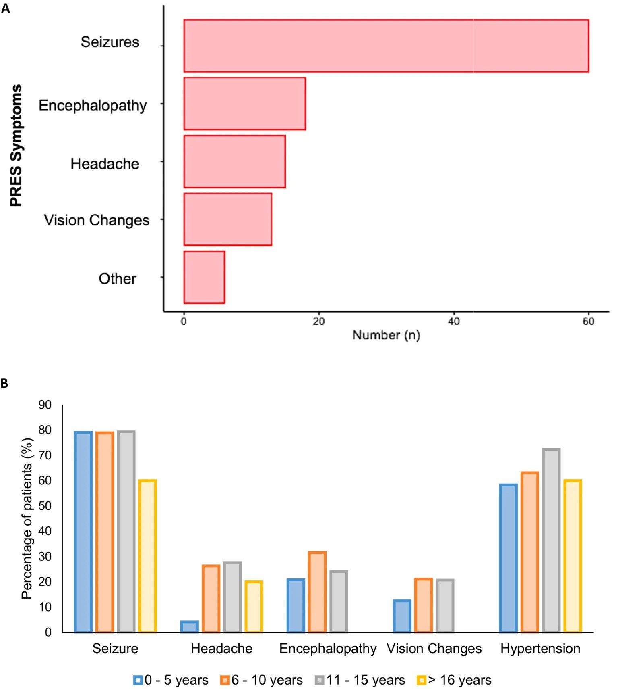
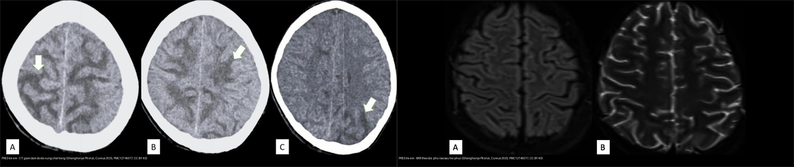
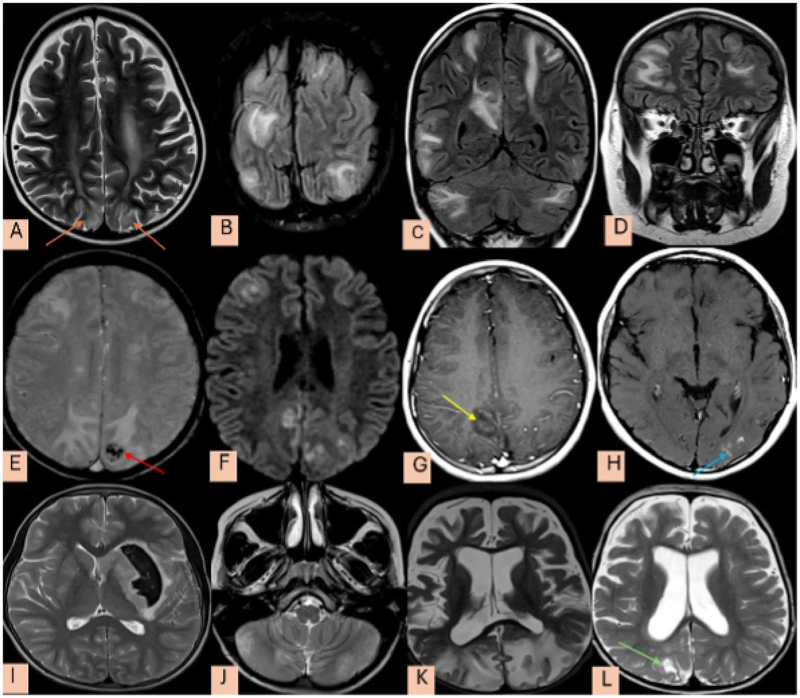
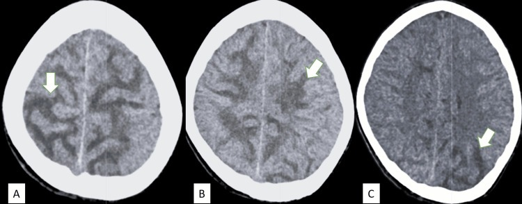
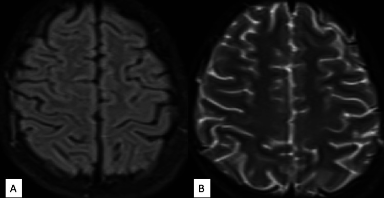
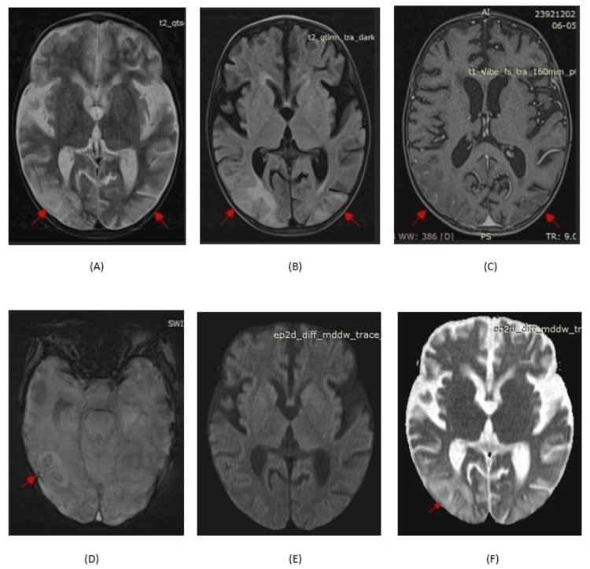
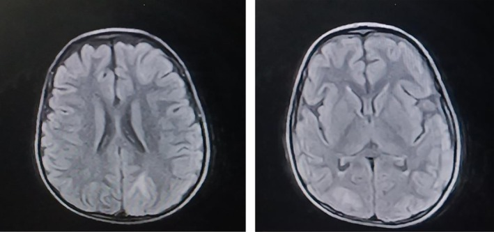
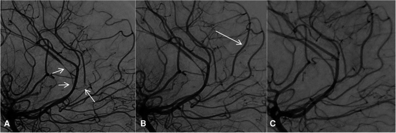
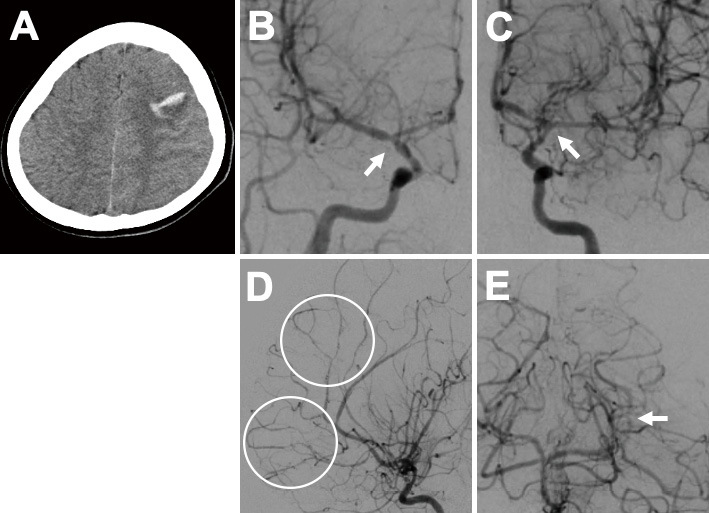

653 — PRES & RCVS ở trẻ em: biến thể không điển hình & ngưỡng tự điều hòa thấp / Pediatric PRES & RCVS: atypical variants and low autoregulation threshold
Tags: pattern:phu-nao-sau pattern:co-mach-nao vung:nao-nhi vung:nao score:RCVS2 protocol:MRI-nao-nhi
Mức chắc chắn (certainty): tổng hợp y văn (literature synthesis) — nhóm tự biên từ y văn mở (Front Neurol 2026, Headache 2026, Front Pediatr 2023, Cureus 2025 CC BY/BY-NC-ND); các ca trong quiz là ca nguyên văn (verbatim case) chép đúng tuổi – lâm sàng – chú thích gốc.
1. Tổng quan — bệnh học & cơ chế hình ảnh (TẠI SAO)
- PRES ở trẻ em là hội chứng lâm sàng–hình ảnh gồm co giật, tăng huyết áp, rối loạn thị giác, rối loạn ý thức kèm phù não mạch máu (vasogenic edema) vùng sau (chẩm–đỉnh) trên MRI. Khác người lớn ở 3 điểm: (1) ngưỡng tự điều hòa THẤP hơn, (2) biến thể KHÔNG điển hình nhiều hơn, (3) nguyên nhân nền thường là bệnh thận/huyết học–ung thư/thuốc ức chế miễn dịch hơn là tăng huyết áp đơn thuần.
- Cơ chế (theo Argon): phối hợp rối loạn chức năng nội mô, hở hàng rào máu-não (BBB), giảm tự điều hòa mạch não → nước thoát vào mô kẽ dưới dạng phù mạch máu. Ở trẻ, ngưỡng tự điều hòa thấp hơn (khoảng 40 mmHg) so với người lớn (50–60 mmHg) → PRES có thể xảy ra với huyết áp thấp hơn nhiều ở trẻ → co giật mới khởi phát, BẤT KỂ có tăng huyết áp hay không, đều phải nghĩ PRES.
- TẠI SAO đọc được bản chất mô bằng vật lý:
- Phù mạch máu = nước ngoại bào → T2W/FLAIR tăng tín hiệu, T1W giảm nhẹ, DWI ÂM + ADC TĂNG; phân bố chất trắng dưới vỏ/vùng chuyển tiếp, thường chừa vỏ.
- Nhồi máu (phù độc tế bào) → DWI SÁNG + ADC TỐI theo lãnh thổ mạch — dấu hiệu tiên lượng xấu, gặp ở thiểu số ca PRES trẻ em.
- Xuất huyết (deoxyhemoglobin/hemosiderin) → mất tín hiệu, "blooming" trên SWI/GRE (microhemorrhage/convexity SAH) — cũng là dấu hiệu nặng.
- Di chứng gliosis/xơ hóa: "reversible" là tên lịch sử — một số ca để lại ổ gliosis tại vùng đã tổn thương.
- Ngưỡng định lượng nằm lòng (cohort lớn nhất Vương quốc Anh, n=77, GOSH 20 năm — Bednarczuk N et al., Front Neurol 2026, PMC13613123):
- Tần suất PRES trẻ em ~0,04%; co giật là triệu chứng hay gặp nhất 77,9% (n=60), rối loạn ý thức 23,3% (n=18), đau đầu 19,4% (n=15), rối loạn thị giác 16,8% (n=13).
- Tăng huyết áp 64,9% (n=50) — nghĩa là ~1/3 trẻ PRES KHÔNG tăng huyết áp.
- Bệnh nền: huyết học/ung thư 32,5% (n=25), thận 22,1% (n=17), miễn dịch 11,7% (n=9).
- Hình ảnh: điển hình chẩm-đỉnh chỉ 24 ca, KHÔNG điển hình tới 40 ca (~62,5%) — so với người lớn 10–58%, trẻ có tỷ lệ biến thể cao hơn (tài liệu ghi tới 61–82%).
- Điện não đồ (EEG) bất thường 90,5% (67/74); thuốc kháng động kinh (ASM) 72,7% (n=56) — 35,7% phải dùng dài hạn (> 6 tháng).
- DWI hạn chế (DWI+) 13 trẻ; 5 trẻ có ổ gliosis tồn lưu khi chụp lại — TẤT CẢ 5 đều có hình ảnh KHÔNG điển hình lúc khởi phát.
- Tái phát lâm sàng 15% — phần lớn tái phát sau khi đổi thuốc ức chế miễn dịch (vd ciclosporin → tacrolimus) và tái phát khi đang dùng thuốc mới.
2. Mẫu hình + chẩn đoán phân biệt theo bối cảnh (Gamut)
- THEO TUỔI & BỆNH NỀN:
- Nhũ nhi/nhỏ tuổi: bệnh thận (viêm cầu thận cấp sau nhiễm liên cầu, hội chứng thận nhiễm mỡ, HUS), bỏng nặng, truyền máu/thiếu máu tán huyết, rối loạn điện giải.
- Trẻ lớn: thuốc ức chế miễn dịch (ciclosporin, tacrolimus), hóa trị, bệnh ung thư máu/lymphoma, lupus, tăng huyết áp.
- Hậu sản ở vị thành niên: tiền sản giật/eclampsia → PRES · RCVS.
- THEO HÌNH THÁI TỔN THƯƠNG (gamut hình ảnh):
- Điển hình: phù đối xứng vỏ + dưới vỏ chẩm-đỉnh hai bên (vùng chuyển tiếp MCA–PCA).
- Không điển hình (rất hay gặp ở trẻ): nhiều thùy/có tiểu não, bất đối xứng, tổn thương hạch nền/thân não, xuất huyết, hạn chế khuếch tán ổ rải rác, ngấm màng mềm (leptomeningeal enhancement).
- RCVS: hẹp từng đoạn đa ổ "chuỗi hạt" hồi phục < 3 tháng; có thể khởi đầu bằng MRA BÌNH THƯỜNG.
- Mnemonic nguyên nhân PRES trẻ (tự soạn): "RUB-TIC" — Renal (thận) · Ung thư/hóa trị · Bỏng/truyền máu · Transplant/ức chế miễn dịch (ciclosporin/tacrolimus) · Infection/nhiễm khuẩn huyết · Cơn THA cấp.

*Biểu hiện PRES ở trẻ em: co giật là triệu chứng hay gặp nhất 77,9% (n=60), tiếp theo rối loạn ý thức 23,3%, đau đầu 19,4%, rối loạn thị giác 16,8%; đau đầu ít gặp hơn ở nhóm 0–5 tuổi (trẻ khó mô tả chủ quan). Nguồn: Bednarczuk N et al., Front Neurol 2026 (PMC13613123), Fig. 3. CC BY 4.0.*3. Bảng so sánh phân biệt (ma trận đối chiếu)
| Thực thể (entity) | Hình ảnh điển hình | Chốt vào (rule-in) | Chốt loại (rule-out) | Gợi ý xác nhận |
|---|---|---|---|---|
| PRES trẻ em điển hình | FLAIR/T2 tăng tín hiệu đối xứng vỏ + dưới vỏ chẩm-đỉnh hai bên; DWI âm/ADC tăng | Đối xứng + dưới vỏ ưu thế + ADC TĂNG + bối cảnh bệnh thận/thuốc/THA | DWI sáng + ADC tối theo lãnh thổ mạch → nhồi máu | MRI não (T2/FLAIR/DWI/ADC/SWI/MRA); theo dõi hồi phục |
| PRES trẻ em KHÔNG điển hình | Nhiều thùy ± tiểu não, bất đối xứng, hạch nền/thân não, xuất huyết, hạn chế khuếch tán ổ | Có bối cảnh PRES + phù ưu thế chất trắng dưới vỏ dù phân bố "lạ" | Tổn thương một ổ, chèn ép, mở rộng khoang → u/áp-xe | MRI đa chuỗi + theo dõi; đối chiếu lâm sàng |
| RCVS trẻ em | Hẹp từng đoạn đa ổ "chuỗi hạt"; convexity SAH, nhồi máu/xuất huyết; có thể MRA bình thường tuần đầu | Đau đầu sét đánh tái diễn + yếu tố khởi phát (thuốc cảm cúm/triptan, hậu sản) + co mạch hồi phục < 3 tháng | Hẹp một mạch, không hồi phục, ngấm đồng tâm mạnh → viêm mạch/xơ vữa | MRA/CTA + lặp 2–3 tuần; RCVS2/RCVS-TCH; DSA |
| Nhồi máu não cấp ở trẻ | DWI SÁNG + ADC TỐI theo lãnh thổ động mạch, bất đối xứng | Bất tương hợp DWI–ADC trong một lãnh thổ mạch | Đối xứng + ADC tăng + chừa vỏ theo lãnh thổ → PRES | DWI/ADC, MRA/CTA cổ–não |
| Hạ đường huyết sơ sinh / vàng nhân (kernicterus) | Hạ đường huyết: vùng chẩm-đỉnh; vàng nhân: T1 thể vân sáng + DWI ÂM (globus pallidus) | T1 globus pallidus sáng + DWI âm = vàng nhân (TSB cao) | Ưu thế chẩm-đỉnh dưới vỏ + ADC tăng + bối cảnh bệnh thận/thuốc → PRES | MRI sọ sơ sinh + TSB; xem bài 654 |
| ADEM / viêm não mất myelin | Tổn thương chất trắng nhiều ổ, ranh giới mờ, hai bên (bất đối xứng), ± tủy; DWI có thể hạn chế | Sau nhiễm trùng/vaccine + tổn thương chất trắng rải rác + đáp ứng corticoid | Ưu thế chẩm-đỉnh dưới vỏ + hồi phục nhanh + bối cảnh PRES → PRES | MRI não–tủy + DNT (băng oligoclonal); xem bài 215 |

Trái: CT trẻ — giảm đậm độ đối xứng chất trắng hai bên (mũi tên), còn phân biệt trắng–xám. Phải: MRI theo dõi — phù ĐÃ HỒI PHỤC (disappearance of oedema). Đây là ca viêm cầu thận cấp sau nhiễm liên cầu ở trẻ. Ảnh ghép letterbox: Ghanghoriya PK et al., Cureus 2025 (PMC12745017), CC BY 4.0.4. Protocol chụp + hệ thống điểm & flowchart
- Chỉ định & protocol (trẻ em — ALARA ưu tiên):
- Co giật mới khởi phát KHÔNG rõ nguyên nhân (kể cả huyết áp bình thường) → MRI não là tiêu chuẩn vàng (nhạy 98% vs CT 46%): T1W, T2W, FLAIR, DWI + ADC, SWI/GRE, TOF-MRA ± CE-FLAIR.
- DWI/ADC là chuỗi quyết định (phù mạch máu vs nhồi máu); SWI tìm xuất huyết/microhemorrhage; MRA tìm co mạch (nếu âm tuần đầu → lặp sau 2–3 tuần).
- Chụp lại sau điều trị để xác nhận hồi phục; cảnh giác ổ gliosis tồn lưu (gặp ở nhóm hình ảnh không điển hình).
- Điều trị PRES trẻ em:
- Loại bỏ/điều trị yếu tố khởi phát: kiểm soát huyết áp, giảm/đổi thuốc ức chế miễn dịch (không bỏ hoàn toàn tùy bệnh nền), điều trị bệnh thận/nhiễm trùng/rối loạn điện giải.
- Kiểm soát co giật bằng ASM (levetiracetam hay dùng) — nhiều trẻ cần dài hạn (> 6 tháng).
- Tăng huyết áp: hạ từ từ, tránh tụt nhanh gây thiếu máu (nguyên tắc như người lớn).
- Điểm chuẩn hóa (phân biệt RCVS với bệnh mạch nội sọ khác — chủ yếu xây trên người lớn, dùng thận trọng ở trẻ):
- RCVS2 score (CTA): thunderclap tái diễn/đơn +5 · ĐM cảnh trong nội sọ −2 · yếu tố khởi phát +3 · nữ +1 · SAH +1 — ≥ 5: Se 90%/Sp 99%.
- RCVS-TCH score: thunderclap tái diễn +2 · nữ +3 · THA đột ngột +4 · yếu tố khởi phát (nhiều +3/một +2) — ≥ 7: Se 80%/Sp 97%.
- RCVS trẻ em: co mạch có thể BÌNH THƯỜNG trên MRA tuần đầu (ca minh họa triptan: ngày 11 bình thường → ngày 16 SAH lồi + hẹp → ngày 19 nhồi máu) → lặp chụp mạch là bắt buộc.
flowchart TD
A[Trẻ co giật mới + rối loạn ý thức/thị giác] --> B[CT sọ: loại trừ xuất huyết/chèn ép]
B --> C[MRI não: T1/T2/FLAIR/DWI/ADC/SWI/MRA]
C --> D{T2/FLAIR tăng ưu thế chất trắng dưới vỏ?}
D -->|Có, DWI âm + ADC TĂNG| E[PRES: phù MẠCH MÁU]
D -->|Có, DWI sáng + ADC TỐI| F[Nhồi máu: phù ĐỘC tế bào]
D -->|Không chẩn đoán chắc| G[Xem DDx: ADEM, viêm não, u - sinh thiết/chọc DNT]
E --> H{Co mạch đa ổ 'chuỗi hạt'?}
H -->|Có| I[PRES + RCVS: chấm RCVS2; ngừng yếu tố khởi phát + nimodipine; KHÔNG corticoid]
H -->|Không, MRA bình thường| J[PRES đơn thuần: loại bỏ yếu tố khởi phát + hạ HA từ từ + kiểm soát co giật]
J --> K{Chụp lại: phù hồi phục?}
K -->|Hồi phục| L[PRES xác nhận; theo dõi tái phát 15%]
K -->|Còn gliosis/tổn thương| M[Di chứng: theo dõi thần kinh - động kinh - phục hồi chức năng]
5. Biến thể bình thường và cạm bẫy
- KHÔNG loại trừ PRES vì hình ảnh "không điển hình": ở trẻ ~62,5% (cohort 77 ca) đến 61–82% có phân bố không điển hình (nhiều thùy, tiểu não, bất đối xứng, hạch nền/thân não, xuất huyết, hạn chế khuếch tán ổ). Đây là cạm bẫy hay gặp nhất.
- Co giật mới + huyết áp BÌNH THƯỜNG vẫn có thể là PRES: ~35% trẻ PRES không tăng huyết áp → đừng đòi hỏi THA để nghĩ PRES.
- "Reversible" không bảo đảm hồi phục hoàn toàn: 5 trẻ trong cohort còn ổ gliosis khi chụp lại — tất cả đều thuộc nhóm hình ảnh không điển hình lúc khởi phát; cần theo dõi động kinh và phục hồi chức năng.
- Tái phát 15% — cẩn thận khi đổi thuốc ức chế miễn dịch: nhiều ca tái phát khi đang dùng thuốc mới (ciclosporin → tacrolimus) → theo dõi sát khi đổi phác đồ.
- RCVS có thể MRA bình thường tuần đầu: nếu đau đầu sét đánh tái diễn → lặp mạch 2–3 tuần, tìm convexity SAH, dùng CE-FLAIR hở BBB; không chốt từ một lần chụp.
- Đừng chẩn đoán "viêm mạch/viêm não" vội khi thấy co mạch kèm phù: RCVS ngấm thành mạch nhẹ/không và hồi phục — điều trị ngược viêm mạch (tránh corticoid).
- Phân biệt với hạ đường huyết/vàng nhân ở sơ sinh: nếu T1 globus pallidus sáng + DWI âm → nghĩ vàng nhân (kernicterus), không phải PRES (xem bài 654).
6. Tự lượng giá — Blind Quiz (ảnh trơn ngoài, đáp án trong)
Ca 1 — Trẻ PRES, nhìn chuỗi MR điển hình và không điển hình:

- Gợi ý lâm sàng (clinical context): trẻ co giật, có bệnh nền thận/huyết học hoặc đang dùng thuốc ức chế miễn dịch.
- Câu hỏi: Hàng trên (A–D) khác hàng giữa/dưới (E–L) thế nào? Kể tên các kiểu "không điển hình"?
Bấm để hiện đáp án (findings + chẩn đoán)
- Dấu hiệu (findings): (A, B) T2W/FLAIR: tổn thương đối xứng vỏ + dưới vỏ chẩm-đỉnh hai bên = điển hình. (C, D) kiểu thùy "không điển hình": nhiều thùy + có tiểu não. (E–H) đặc điểm tín hiệu không điển hình: xuất huyết chẩm trái (E), ổ hạn chế khuếch tán rải rác trong tổn thương (F), xuất huyết nhu mô trong tổn thương (G), ngấm màng mềm (H). (I, J) xuất huyết hạch bao trái + thay đổi tín hiệu hạch nền/cerebellar hai bên. (K, L) tổn thương đối xứng chẩm-đỉnh để lại ổ gliosis (mũi tên xanh) khi chụp lại sau 1 năm.
- Chẩn đoán (diagnosis): PRES trẻ em — trong đó hình ảnh không điển hình rất hay gặp; xuất huyết/hạn chế khuếch tán gợi tiên lượng nặng hơn và ổ gliosis tồn lưu. Không loại trừ PRES vì phân bố "lạ".
- Nguồn ảnh: Bednarczuk N et al., Front Neurol 2026 (PMC13613123), Fig. 4. CC BY 4.0.
Ca 2 — Trẻ viêm cầu thận cấp sau nhiễm liên cầu, co giật; CT rồi chụp lại MRI:

- Câu hỏi: (a) CT thấy gì? (b) Vì sao cần MRI dù CT đã có bất thường? (c) Điều trị nền là gì?
Bấm để hiện đáp án (findings + chẩn đoán)
- Dấu hiệu (findings): (A, B) giảm đậm độ ĐỐI XỨNG chất trắng hai bên mức centrum semiovale, còn phân biệt trắng–xám (mũi tên); (C) tổn thương chất trắng bất đối xứng vùng sau.
- Chẩn đoán (diagnosis): PRES ở trẻ viêm cầu thận cấp sau nhiễm liên cầu — cơ chế tăng huyết áp cấp + hở BBB. Đối chiếu MRI theo dõi:

- MRI theo dõi: phù ĐÃ HỒI PHỤC ("disappearance of oedema"). Xử trí: kiểm soát huyết áp + điều trị bệnh thận nền + kiểm soát co giật.
- Nguồn ảnh: Ghanghoriya PK et al., Cureus 2025 (PMC12745017), Fig. 1 & 2. CC BY 4.0.
Ca 3 — Trẻ bỏng nặng, co giật. Nhìn MRI đa chuỗi:

- Câu hỏi: Chuỗi nào chốt phù mạch máu? Có xuất huyết hay hạn chế khuếch tán không?
Bấm để hiện đáp án (findings + chẩn đoán)
- Dấu hiệu (findings): T2 (A) và FLAIR (B) tăng tín hiệu chẩm-đỉnh hai bên; T1 giảm (C); SWI (D) có vi xuất huyết; DWI (E) KHÔNG hạn chế khuếch tán, ADC (F) tăng (facilitated diffusion) = phù mạch máu điển hình của PRES.
- Chẩn đoán (diagnosis): PRES trẻ em sau bỏng — bối cảnh đau/bỏng → tăng huyết áp & rối loạn nội mô. SWI có microhemorrhage nhưng DWI/ADC vẫn xác nhận phù mạch máu (khác nhồi máu: DWI sáng + ADC tối). Điều trị theo nguyên nhân + hạ HA + kiểm soát co giật.
- Nguồn ảnh: Shouri S et al., Cureus 2025 (PMC12451477), Fig. 1. CC BY 4.0.
Ca 4 — Trẻ lymphoma Hodgkin nhập viện vì hội chứng thận nhiễm mỡ, biến chứng PRES. Nhìn FLAIR:

- Câu hỏi: Mô tả tổn thương? Vì sao trẻ ung thư máu/lymphoma dễ PRES?
Bấm để hiện đáp án (findings + chẩn đoán)
- Dấu hiệu (findings): FLAIR: tăng tín hiệu vùng chẩm-đỉnh hai bên, phù hợp PRES.
- Chẩn đoán (diagnosis): PRES ở trẻ lymphoma Hodgkin + hội chứng thận nhiễm mỡ (phù, tăng huyết áp, thuốc/hóa trị). Nhóm huyết học–ung thư chiếm tới 32,5% bệnh nền PRES trẻ em — cần nghĩ PRES khi trẻ ung thư có co giật/rối loạn thị giác.
- Nguồn ảnh: Al-Shohef B et al., Clin Case Rep 2026 (PMC13322745), Fig. 2. CC BY-NC 4.0.
Ca 5 — Bé gái 12 tuổi, đau đầu sét đánh, hẹp mạch nặng; DSA trước và sau thuốc giãn mạch nội động mạch:

- Câu hỏi: (A) và (B) khác nhau thế nào? Chẩn đoán? Vì sao KHÔNG dùng corticoid?
Bấm để hiện đáp án (findings + chẩn đoán)
- Dấu hiệu (findings): (A) DSA ngày 12: hẹp lan tỏa và nặng nhiều động mạch não (mũi tên); (B) sau truyền thuốc giãn mạch nội động mạch lần 1: các đoạn hẹp CẢI THIỆN rõ.
- Chẩn đoán (diagnosis): RCVS ở trẻ em — co mạch hồi phục, đáp ứng giãn mạch. Xử trí: ngừng yếu tố khởi phát + nimodipine; TRÁNH corticoid (có thể làm nặng/thiếu máu). Đây là bệnh cảnh hiếm ở trẻ và khác hoàn toàn viêm mạch (PACNS) — điều trị ngược nhau.
- Nguồn ảnh: Rizzati F et al., Front Pediatr 2023 (PMC10020348), Fig. 2. CC BY 4.0.
Ca 6 — Vị thành niên dùng triptan, đau đầu sét đánh; CT/DSA ngày 16. Nhìn ảnh:

- Câu hỏi: CT (A) và chụp mạch (B, C) cho thấy gì? Đây là "chuỗi hạt" — cẩn thận điều gì?
Bấm để hiện đáp án (findings + chẩn đoán)
- Dấu hiệu (findings): (A) CT: SAH LỒI (convexity) vùng trán trái; (B, C) chụp mạch: hẹp đoạn tận động mạch cảnh hai bên = co mạch (RCVS).
- Chẩn đoán (diagnosis): RCVS ở trẻ vị thành niên do TRIPTAN (yếu tố khởi phát). Lưu ý: MRA ngày 11 BÌNH THƯỜNG, tới ngày 16 mới thấy SAH + hẹp, ngày 19 có nhồi máu (các chuỗi sau) — bài học: co mạch có thể xuất hiện MUỘN, một lần chụp bình thường KHÔNG loại trừ RCVS → lặp chụp mạch; theo dõi nhồi máu/xuất huyết.
- Nguồn ảnh: Okazaki Y et al., 2025 (PMC12391675), Fig. 2. CC BY-NC-ND 4.0 — ảnh giữ nguyên bản.
Ca 7 — Nhìn ảnh ghép, chốt chuỗi nào quyết định phù mạch máu:
- Câu hỏi: Dấu hiệu trên CT (trái) và MRI theo dõi (phải)? Chuỗi nào xác nhận phù mạch máu (không phải nhồi máu)?
Bấm để hiện đáp án (findings + chẩn đoán)
- Dấu hiệu (findings): CT: giảm đậm độ đối xứng chất trắng hai bên (mũi tên), còn phân biệt trắng–xám; MRI theo dõi: phù hồi phục hoàn toàn.
- Chẩn đoán (diagnosis): PRES trẻ em. DWI ÂM + ADC TĂNG trên MRI là chuỗi xác nhận phù mạch máu (nếu DWI sáng + ADC tối thì là nhồi máu). CT chỉ nhạy ~46%, MRI ~98% → CT âm không loại trừ PRES.
- Nguồn ảnh: ghép từ Ghanghoriya PK et al., Cureus 2025 (PMC12745017), Fig. 1 & 2. CC BY 4.0.
Bài liên quan chéo
- 600 – Tổng quan Nhi khoa
- 219 – PRES & RCVS (người lớn): phù não sau & co mạch não có hồi phục (nền tảng Bartynski, RCVS2/RCVS-TCH)
- 654 – Tổn thương não sơ sinh KHÔNG do ngạt: hạ đường huyết & vàng nhân
- 655 – HIE sơ sinh & dị dạng bẩm sinh thần kinh
- 652 – Đột quỵ & bệnh mạch máu não trẻ em: moyamoya, viêm mạch, ASL
- 650 – Thần kinh nhi: xuất huyết mầm & u hố sau
- 224 – Chấn thương sọ não ở trẻ (TBI nhi)
- 657 – Dị tật hố sau: Joubert & rhombencephalosynapsis
Ảnh
images/653_pres_MRI_PMC13613123-Fig4-CCBY.jpg— MRI trẻ: PRES điển hình + không điển hình (CC BY 4.0).images/653_pres_bieu-hien_PMC13613123-Fig3-CCBY.jpg— biểu hiện lâm sàng PRES trẻ theo tuổi (CC BY 4.0).images/653_pres_CT_PMC12745017-Fig1-CCBY.jpg— CT trẻ viêm cầu thận cấp sau liên cầu (CC BY 4.0).images/653_pres_MRI_PMC12745017-Fig2-CCBY.jpg— MRI theo dõi: phù hồi phục (CC BY 4.0).images/653_pres_MRI_PMC12451477-Fig1-CCBY.jpg— MRI đa chuỗi PRES ở trẻ bỏng (CC BY 4.0).images/653_pres_MRI_PMC13322745-Fig2-CCBYNC.jpg— FLAIR trẻ Hodgkin (CC BY-NC 4.0).images/653_rcvs_DSA_PMC10020348-Fig2-CCBY.jpg— DSA trước/sau giãn mạch, RCVS trẻ 12 tuổi (CC BY 4.0).images/653_rcvs_CT-DSA_PMC12391675-Fig2-CCBYNCND.jpg— CT convexity SAH + hẹp mạch, RCVS do triptan (CC BY-NC-ND 4.0, giữ nguyên bản).images/composite_653_pres-tre-em_CT-vs-MRI.jpg— ảnh ghép đối chiếu (CC BY 4.0).- Nguồn + giấy phép đầy đủ:
images/CREDITS.md; link gốc:sources.md.
Không dùng để chẩn đoán độc lập khi chưa có người hướng dẫn.